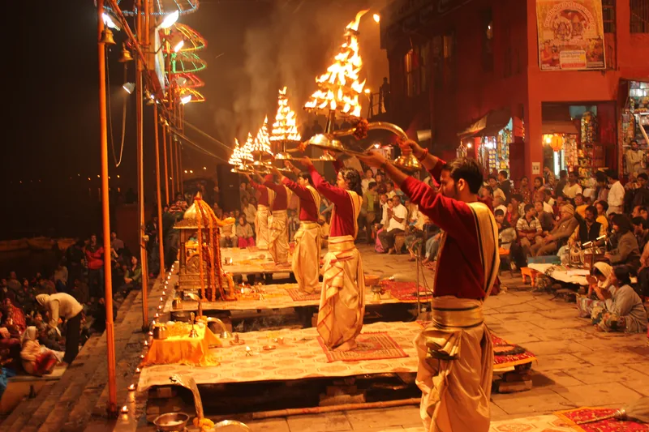

Home / Blog / Dev Deepawali Guide

In this guide
Held on the auspicious night of **Kartik Poornima** (exactly 15 days after Diwali), Dev Deepawali in Varanasi is a celebration of the victory of Lord Shiva over the demon Tripurasur. It is believed that the gods descend to Earth on this night to bathe in the holy Ganges. Over a million earthen lamps (diyas) line the steps of the ghats from Ravidas Ghat to Rajghat, transforming Kashi into a city of pure golden starlight. Read our comprehensive guide to plan your trip.
Varanasi Dev Deepawali Boat Fares & Booking Guide
The only way to truly experience the scale of Dev Deepawali is from a boat in the middle of the Ganga River, facing the lit ghat steps. Because of the massive influx of tourists, boat booking rates skyrocket on this day:
- Sharing Wooden Boats: ₹1,500 to ₹3,000 per seat (compared to ₹300 on normal days).
- Private Wooden Boats (8-10 Pax): ₹25,000 to ₹40,000. These must be booked 2-3 months in advance.
- Luxury Ganga Cruises / Motorboats: ₹10,000 to ₹18,000 per head, which includes snacks, pure veg meals, and onboard bhajan performances.
If you book our combined Ayodhya Prayagraj Varanasi Tour Package for Kartik Poornima, boat coordinates and bookings are managed for you at pre-negotiated rates.
Ganga Aarti Timings on Dev Deepawali
Due to the winter season and the massive scale of preparations, the evening Ganga Aarti starts earlier than usual:
- Timing: 5:15 PM to 6:30 PM (Priests perform special, extended rituals with giant multi-tier brass lamps).
- Main Center: Dashashwamedh Ghat hosts the grandest scale of rituals, while Rajendra Prasad Ghat and Assi Ghat perform equally grand deep-daan ceremonies.
Tips for Senior Citizens & Families
Crucial Planning Checklist:
- Arrive at the Ghats by 3:00 PM: Roads leading to Godowlia and Dashashwamedh are closed to all vehicles (including autos and e-rickshaws) by 2:00 PM. Senior citizens must reach the ghat steps early to avoid walking long distances in the crowd.
- Stay Close to Godowlia: Choose hotels that are within walking distance to reduce transit struggles. Check our Ayodhya to Varanasi Distance and Transit Guide for route connections.
- Book the Right Package: It is highly recommended to book a fully-managed pilgrimage package. A local tour escort is essential on Dev Deepawali to guide you through security barricades and secure your reserved boat.
Frequently Asked Questions
Dev Deepawali aur Diwali me kya antar hai?
Diwali Bhagwan Ram ke Ayodhya lautne ki khushi me manayi jaati hai, jabki Dev Deepawali uske 15 din baad Kashi me Bhagwan Shiva dwara Tripurasur vadh ki khushi me devtaon dwara manayi jaati hai.
Kya Dev Deepawali ke din boats block hoti hain?
Haan, Dev Deepawali ke din local police aur administration boat operations ko regularize karte hain. Last-minute boat milna lagbhag namumkin hota hai, isliye pehle se booking karna zaroori hai.
Kashi Vishwanath Mandir me Dev Deepawali par kya vishesh hota hai?
Kashi Vishwanath Mandir corridor ko lakhon phoolon aur diyon se sajaya jata hai. Mandir ke darshan timings normal rehte hain, par bheed bohot zyada hoti hai. Learn more about schedules in our Ganga Aarti Timings and Ghats Guide.
Book Kartik Poornima Yatra
Secure Your Dev Deepawali Tour
Get premium hotels in Varanasi, pre-booked private boats, and customized yatra packages. Speak to our pilgrimage desk today.